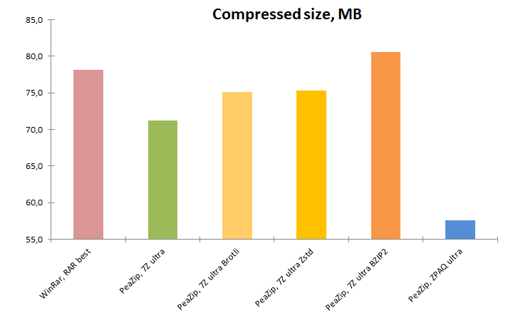

|
Goals
Test best
possible compression settings.
Compare
top compression formats 7Z, ZPAQ (PeaZip), RAR (WinRar), all formats
at best compression
settings, in terms of
maximum possible compression ratio.
7Z format, always at best available
compression level, was also tested
replacing the default compresssion algorithm LZMA2 with Brotli, BZip2,
and Zstandard algorithms.
|
|
Software
settings
Benchmarks
are conducted
on Windows 10 64 bit, using 64 bit versions of:
- PeaZip 10.6.0
- WinRar 7.11
No cryptography option is set, since encryption impact on performances
is out of the scope of
this benchmark.
|
|
Hardware
settings
Notebook with Intel Core i7-8565U CPU, 4
physical cores with hyper-threading (8 logical cores), 8 GB RAM
System disk 512 GB PCIe NVMe SSD, NTFS filesystem.
With 7-Zip benchmark score of 23500, this machine represents an entry
level specs
system for today's standards, especially as tested algorithms are
extremely CPU- and RAM- intensive.
|
|
Input data
Benchmark input, same of general purpose compression benchmark,
contains
42 files in 4 directories for total 303 MB
(318.000.857 bytes), composed by:
|
|
|
|
Archive
formats compared in this benchmark
- 7Z file
format
(7-Zip, 1999) Open Source archive format, widely used and well-known
for excellent compression ratio, tested using default LZMA2 algorithm
- Brotli compression algorithm
(Google, 2013) applied to 7Z format in alternative to LZMA2 algorithm
(in PeaZip, from Advanced tab in compression screen). Brotli is an Open
Source pure compression standard developed for
maximum compression and decompression speed, but very flexible and
capable of also providing high compression ratio.
- BZip2 compression algorithm (Julian Seward,
1996) applied to 7Z format in alternative to LZMA2 algorithm (in
PeaZip, from Advanced tab in compression screen). Based on
Burrows–Wheeler transform, BZip2 provides intermediate compression
which, in terms of speed/compression ratio tradeoff, is in middle
ground between fast algorithms like Deflate and powerful ones like PPMd
and LZMA.
- RAR file
format
(RarLabs, 1995) proprietary archive format quickly building reputation
of being powerful compressor outperforming contemporary zip, bz2, and
ace formats. Latest RAR5 format revision is being tested.
- ZPAQ format (Matt Mahoney at
al., 2009)
Open Source archive format, computing intensive, providing very high
compression ratio,
supersedes previous PAQ format, multiple times Hutter Prize winner. The
format is now supported through Zpaqfranz
 implementation.
implementation.
- Zstandard compression algorithm
(Yann Collet, Przemysław Skibiński, Facebook, 2015) applied to 7Z
format in alternative to LZMA2 algorithm (in PeaZip, from Advanced tab
in compression screen). Zstandard is an Open Source pure
compression standard. Zstd compressor was developed with same scope of
Brotli, also very
flexible and being capable of deliver high compression ratio in
alternative to impressive compression speed.
|
|
|
Maximum compression
benchmark methods
Benchmark
input data is saved to system disk (PCIe SSD) and compressed to system
disk, same partition, separate directory; the resulting archives are
then extracted to
separate directory on same (system) disk/partition.
Each compression and extraction test is repeated 5 times to get an
average value; size is expressed in MB, time in seconds.
Maximum
compression
benchmark results
table, the lower the better for all columns
|
Compressed
size (MB)
|
Compression
ratio
|
Compression
time (sec)
|
Extraction
time (sec) |
WinRar,
RAR best
|
78.1
|
25.78%
|
28.5
|
1.8
|
PeaZip, 7Z
ultra
|
71.2
|
23.50%
|
137.0
|
3.4
|
PeaZip, 7Z
ultra Brotli
|
75.1
|
24.79%
|
208.0
|
0.8
|
PeaZip, 7Z
ultra Zstd
|
75.3
|
24.85%
|
300.0
|
1.2
|
PeaZip, 7Z
ultra BZip2
|
80.6
|
26.60%
|
81.0
|
7.1
|
| PeaZip,
ZPAQ ultra |
57.6
|
19.01%
|
359.0
|
358.0
|
Archive size in MB (lower
better), compression ratio of input data, and time in seconds (lower
better) to complete compression and de-compression of data.
Maximum compression
ratio
results
ZPAQ reaches the maximum compression ratio, compressing the 303.0 MB
input
down to 57.6 MB (19.01%), followed by 7Z ultra (with default LZMA2
compression algorithm) which is able to reduce the input to 71.2 MB
(23.50% compression ratio).
Even if usually associated with real-time compression, both Brotli and
Zstandard
algorithms reaches very high compression ratios (quite close, 24,79%
Brotli, 24,85% Zstd), better than BZip2 and RAR, when set at ultra
compression level (best possible compresssion settings).
RAR best (WinRar) provides a worse compression
ratio than other tested algorithms, with the exception of BZip2.

Maximum compression
speed
results
RAR best provides fastest compression times of all tested formats.
In the 7Z ultra group, Bzip2 provides the fastest compression, and
Brotli and Zstd, set at ultra compression level, takes more time to
complete the test than standard LZMA2 algorithm at same compression
level, with Zstd being the slowest alternative.
ZPAQ ultra was the slowest compresor in this benchmark.

Maximum compression
extraction speed results
7Z ultra, with Brotli and Zstd, provides the maximum extraction speed
in this benchmark (Brotli being the fastest).
RAR best is the third fastest extractor, with 7Z ultra with LZMA2
being around 2x slower in decompression than RAR, and 7z ultra with
BZip2 being almost 4x slower than RAR.
The slowest format in terms of extraction speed is ZPAQ, with
extraction time being in the same range of compression time.
Competing formats, for reference, implement de-compression routines 1
or 2 orders of magnitude faster than compression routines.
|
Best format for
maximum possible compression ratio
ZPAQ ultra is the
winner in
terms of maximum attainable compression,
but is slower than other formats either in compression and, notably, in
extraction.
RAR best is the right choice when it is needed to preserve speed at
cost
of compression ratio (which quite defeats the point of this specific
benchmark)
7Z ultra with LZMA2, Brotli, and Zstd, are viable middle ground
alternatives to Zpaq, providing significantly slower (but better)
compression than
RAR best, and preserving resonable (or even faster) extraction times.
What is the most
powerful file compressor?
ZPAQ is clearly the top performing format in this benchmark focused on
maximum attainable compression.
Zpaqfranz, on the
entry level hardware tested in this
benchmark, is largely comparable to classic Zpaq implementation in
terms of speed and compression ratio when set at ultra compression
level, however in the author's repository are available hardware
accelerated builds which can improve speed on compatible hardware.
What is the
overall
best compression format?
It depends on user's
need, with compression ratio being only one factor
of the equation.
"RAR best" leans on the fast side, "7Z ultra" improves compression
ratio at
cost of speed, "ZPAQ ultra" is recommended only in case the only factor
in account is the max compression ratio.
7Z vs RAR, which
is
the best compressor?
7Z ultra outperforms RAR best
in terms of
compression ratio, but RAR outperforms 7Z in terms of compression
speed.
Extraction speed is slower, but still reasonable, for 7Z ultra, and can
be made faster than RAR using Brotli or Zstd algorithms instead of the
LZMA2.
Are Brotli and
Zstandard suited for max compression?
Brotli and Zstd can provide surprisingly good compression ratios, even
if they are designed primarily for fast compression tasks.
Compression effciency seems lower than for LZMA2 algorithm, which
produces smaller archives in less time, but extraction speed is better
for Brotli and Zstd than for LZMA2.
The two formats tops to very similar max compression ratios, but in
this benchmark Brotli outperforms Zstd in terms of compression and
decompression speed.
Is it worth to set
best /
maximum / ultra compression settings?
Increasing compression level decreases performances with diminishing
returns: note for reference that compression times in this test are
quite similar to ones in the "out-of-the-box" compression benchmark
which operates on a 4x larger input!
File spanning and data deduplication are
recomended in
alternative to trying increasingly higher compression settings, and solid compression
option is a must-have to reach highest compression ratio when
multiple
similar files are involved - even if single files are not
compressible
(in the traditional sense) one by one.
Read more about how to create 7Z
files, how
to create PAQ / ZPAQ files, and suggestions if maximum
compression is needed.
Please
note PeaZip is also capable to create
RAR files if WinRar is installed in the system.
Synopsis: Maximum file
compression benchmark. 7Z, ZPAQ versus RAR comparison for best,
most powerful compressor format. What algorithm compresses the most.
What archive format reach highest compression ratio. Which file
archiver utility compresses better. What are the best compression
options and settings.
Topics: maximum compression
benchmark, best file compressor, best archive format for max
compression, 7z vs rar vs zpaq
PeaZip > Compression
benchmark > Maximum compression benchmark: 7z, zpaq vs rar
|
|